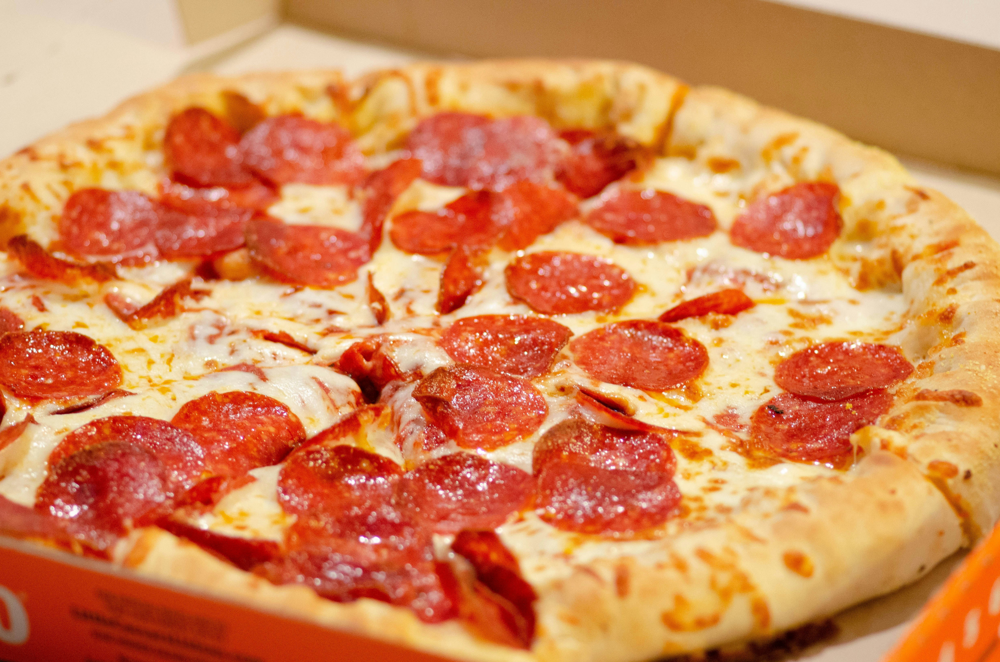

Sylo's Pepperoni Pizza

Step into the vast world of italy with another italian dish the pepperoni pizza!
Ingredients:
For the dough:
- White bread flour (300g),
- Baking powder (2tsp),
- Sea salt (1/2 tsp),
- Rapeseed oil ( 2tsp),
- Lukewarm water (150‐175ml),
For the toppings:
- Passata (120g),
- Tomato purée (1tbsp),
- Dried mixed herbs (1/2 sea salt),
- 1 mozzarella ball (torn into small pieces),
- 10 pepperoni slices,
- Grated cheddar cheese (30g).
Method:
-
Preheat the oven to 200C/180C Fan/Gas 6 and place a large baking tray upside-down on a shelf
-
To make the dough, sift the flour and baking powder into a large bowl. Add the salt and a pinch of pepper,
then stir in the oil. Make a well in the centre, then stir in the warm water and mix to a soft dough, drawing
the flour in from the side of the bowl a little at a time ‐ you might need to add another 25ml/1fl oz water if
the dough is a little dry; you want it to be slightly sticky and soft.
-
Tip the dough onto a lightly floured work surface and knead for 2 minutes, until smooth and springy.
-
Place a sheet of greaseproof paper on the work surface, then dust with a little flour and place the dough on top of it.
Carefully roll the dough out into a 30cm/12in disc, roughly the thickness of a pound coin. Pick the paper up and carefully
slide it onto the hot baking tray in the oven. Bake for 3 minutes.
-
Meanwhile, pour the passata into a bowl, then add the tomato purée, mixed herbs and sea salt and black pepper and mix.
-
Remove the dough tray from the oven. Cover the base with the tomato sauce, using the back of a spoon, leaving a small gap around
the edges of the dough. Scatter the mozzarella over the tomato sauce, then top with the pepperoni and cheddar.
-
Bake for 15 minutes, or until the base has puffed up and is cooked through and the cheese is golden and bubbling. Cut into wedges and
serve immediately.
Now you can sit back and indulge in the masterpiece that has just been taken out your oven!
To go back home click here.